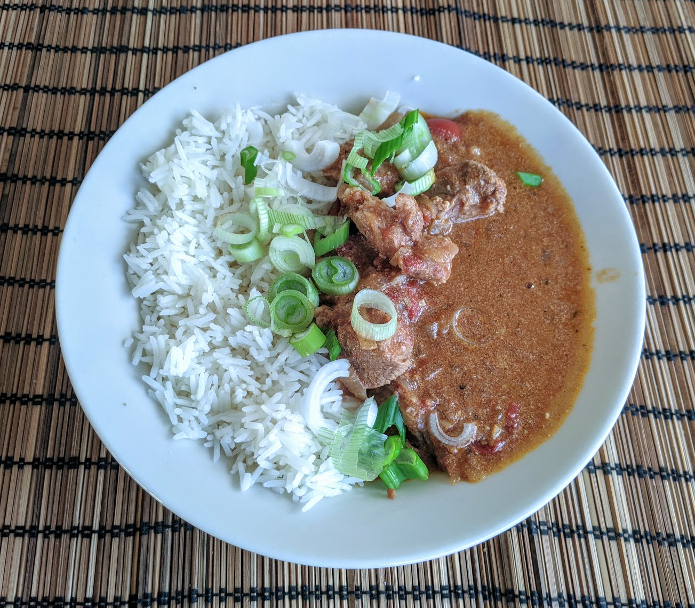

Curry d'agneau

Pour 6 personnes :
- Un kilo d'agneau pour ragoût (cou, épaule…)
- Deux gros oignons
- Huit gousses d'ail
- Une boîte de 400g de tomates cerises en conserve (ou bien de tomates concassées, si on ne trouve pas)
- Une cuillère à café bombée de garam masala
- Une cuillère à café bombée de piment en poudre
- Une cuillère à café bombée de cannelle
- Deux cuillères à café de cumin en poudre
- 150mL de yaourt
- Sel, poivre, huile d'olive
- Éplucher et couper les oignons en petits bouts, les faire revenir dans une grosse casserole avec de l'huile d'olive.
- Pendant ce temps, éplucher et émincer l'ail, et le rajouter dans la casserole lorsque les oignons commencent à prendre une jolie couleur.
- Faire dorer deux-trois minutes, puis ajouter les tomates cerises avec leur jus. Écraser grossièrement les tomates cerises, mélanger, et laisser revenir pendant cinq-six minutes.
- Pendant ce temps, couper l'agneau en morceaux de 4-5 centimètres. Ajouter les épices, saler, poivrer, mélanger, puis ajouter l'agneau dans la casserole.
- Une fois que l'agneau a une jolie couleur, ajouter le yaourt doucement en mélangeant, puis un peu d'eau (genre 200mL) pour que ça recouvre tout juste l'agneau.
- Faire bouillir puis couvrir, réduire le feu, et faire mijoter une heure et demie environ (il faut que l'agneau devienne bien tendre).
- Servir chaud, avec du riz et/ou des naans.
Remarque : on peut remplacer les tomates cerises par une boîte de tomates concassées, et la recette fonctionne aussi avec du yaourt au soja.